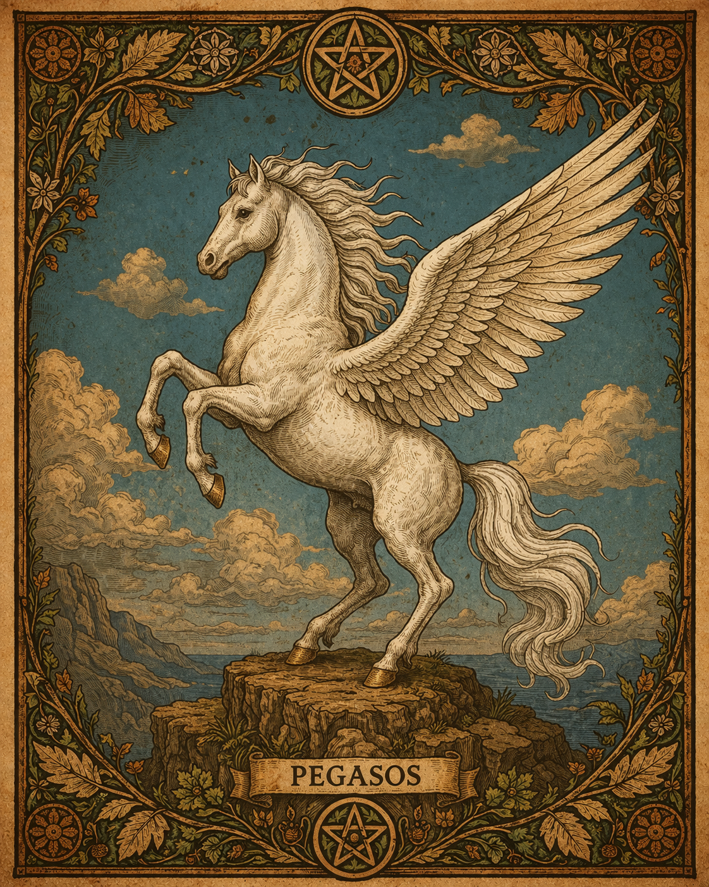

A sabedoria cresce como as raízes: em silêncio, no escuro, sustentando tudo.
Conhecimento antigo • magia • mitologia
Adentre os Mistérios
Adentre os Mistérios
do Mundo Antigo
Lendas esquecidas, símbolos sagrados e conhecimentos ancestrais aguardam por aqueles que ousam olhar além do visível.

Conhecimento Essencial
O que é Mitologia?
A mitologia é o conjunto de histórias, símbolos e narrativas criadas por diferentes culturas para explicar o mundo, a natureza e a existência humana.
Mitologia
Muito além de simples contos, os mitos carregam valores, crenças e ensinamentos profundos. Deuses, criaturas e forças naturais representam ideias simbólicas que ajudavam a responder perguntas fundamentais sobre a vida, a morte, o destino e o universo.
Mito x Realidade
Diferente do senso comum, um mito não é necessariamente uma mentira. Ele representa uma verdade simbólica, construída a partir da percepção e da experiência de um povo.
Enquanto a realidade busca explicações baseadas em fatos e evidências, o mito interpreta o mundo através de símbolos, arquétipos e significados mais profundos.
Assim, mitologia e realidade não são opostos — são formas diferentes de compreender a existência: uma através da razão, outra através do significado.
Conhecimento Antigo
Vozes do Mundo Antigo
Sabedorias que atravessaram eras, ecoando através de diferentes culturas, tradições e visões sobre o mundo.
Aquele que teme o destino já foi derrotado por ele.
O destino pode ser escrito, mas a jornada é sempre escolhida.
A alma que conhece seu caminho não teme a escuridão.
O caos não é o oposto da ordem, mas sua origem.
A mente inquieta cria sofrimento, a mente consciente cria liberdade.
Nada acontece sem propósito, mesmo aquilo que não compreendemos.
A água vence não pela força, mas pela persistência.
Aquele que anda com sabedoria encontra a vida.
Civilizações e Tradições
Mitologias do Mundo

Abenaki
Tradições e narrativas do povo Abenaki.

Aborígene
Espiritualidade ancestral dos povos da Austrália.

Africana
Forças espirituais e tradições do continente africano.

Alemã
Lendas e criaturas do folclore germânico.

Americana
Histórias e tradições das culturas americanas.

Árabe
Contos místicos e entidades do deserto.

Argentina
Lendas e mitos populares da Argentina.

Asteca
Deuses e rituais da civilização asteca.

Basca
Tradições antigas da cultura basca.

Brasileira
Lendas e entidades do folclore nacional.

Budista
Símbolos e ensinamentos espirituais do budismo.

Caribenha
Tradições espirituais das ilhas do Caribe.

Catalana
Lendas e tradições da Catalunha.

Celta
Druidas e forças espirituais da natureza.

Chilena
Lendas e histórias do Chile.

Chinesa
Dragões, equilíbrio e sabedoria ancestral.

Colombiana
Lendas e tradições da Colômbia.

Cristã
Simbolismos e narrativas bíblicas.

Dinamarquesa
Tradições nórdicas e histórias antigas.

Dominicana
Lendas e crenças da República Dominicana.

Egípcia
Deuses e vida após a morte no Egito Antigo.

Escandinava
Deuses e mitos do norte europeu.

Escocesa
Lendas e criaturas das terras altas.

Eslava
Tradições e deuses da Europa Oriental.

Europeia
Conjunto de mitos do continente europeu.

Filipina
Lendas e espíritos das Filipinas.

Finlandesa
Mitologia e épicos do norte europeu.

Francesa
Lendas e tradições da França.

Gaélica
Tradições celtas da Irlanda e Escócia.

Grega
Zeus, Atena e os deuses do Olimpo.

Haitiana
Tradições espirituais e vodu.

Havaiana
Deuses e forças naturais do Pacífico.

Heráldica Europeia
Brasões e símbolos de poder.

Hindu
Divindades e ciclos cósmicos.

Holandesa
Lendas e folclore dos Países Baixos.

Húngara
Tradições e mitos da Hungria.

Inca
Deuses e rituais dos Andes.

Indiana
Tradições espirituais do subcontinente indiano.

Indonésia
Lendas e tradições do sudeste asiático.

Inglesa
Lendas e contos do folclore britânico.

Inuit
Espiritualidade dos povos do Ártico.

Iorubá
Orixás e forças espirituais africanas.

Irlandesa
Lendas celtas da Irlanda.

Japonesa
Yokais, espíritos e deuses japoneses.

Judaica
Tradições e textos sagrados antigos.

Lituana
Tradições bálticas e espirituais.

Maia
Cosmologia e deuses da civilização maia.

Malaio
Lendas e crenças do sudeste asiático.

Maori
Tradições espirituais da Nova Zelândia.

Mesopotâmica
Primeiras histórias da humanidade.

Mexicana
Lendas e tradições do México.

Nórdica
Odin, Thor e o Ragnarok.

Persa
Mitologia e espiritualidade do Irã antigo.

Portuguesa
Lendas e tradições de Portugal.

Romana
Deuses e mitos da Roma Antiga.

Romena
Lendas e folclore da Romênia.

Tibetana
Espiritualidade e símbolos do Tibete.

Tupi-Guarani
Lendas indígenas do Brasil.

Turca
Lendas e tradições da Turquia.

Umbanda
Espiritualidade e entidades da Umbanda.
Bestiário
Criaturas do Mundo Antigo



Símbolos e Significados
Símbolos do Mundo Antigo


Narrativas e Tradições
Lendas do Mundo Antigo


Objetos de Poder
Relíquias Ocultas